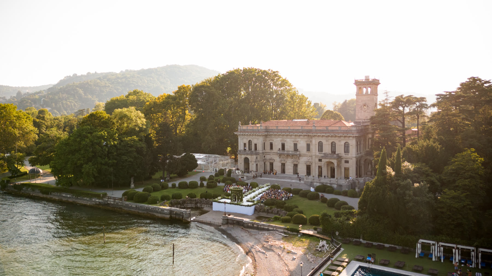
Destination Weddings Worldwide
Destination Wedding Videographer · Worldwide
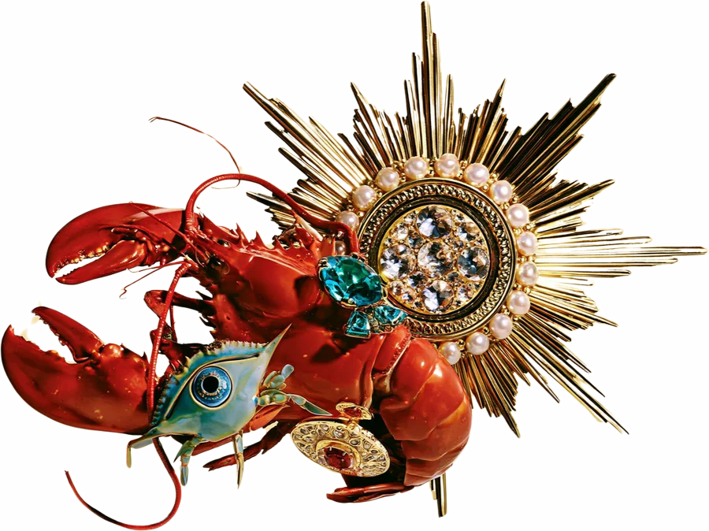
Key takeaways
- The studio. A destination wedding videographer for couples who want the day to feel like cinema: Hollywood-grade craft, a French touch, and a team that knows the world's most photographed venues from the inside.
- The reach. We film across France, Italy, Monaco, Morocco, Croatia, the Dominican Republic and the United States - with US-based crews for American celebrations.
- The film. A feature-length destination wedding film, a highlight cut, a teaser for the morning after.
A destination wedding film, made the way cinema is made
Most wedding video is captured. Ours is directed, and the difference starts with the two people behind it.
- Kevin. Founder and cinematographer, trained in visual effects. He learned to build a shot before anyone stepped into it... so the framing, the movement and the light are decided long before the day, never improvised during it.
- Laura. She came to film through luxury weddings, where the bar is not "beautiful". The bar is "cover story". She reads an itinerary, a family, a room, and protects the moments a director alone would miss.
- The method. Every wedding begins as a treatment: a plan written like a short film, with an opening, a middle, and a final frame you will remember for the rest of your life.
- The result. A destination wedding film that plays less like a record and more like cinema you happen to be in - editorial polish wrapped around raw, real emotion.
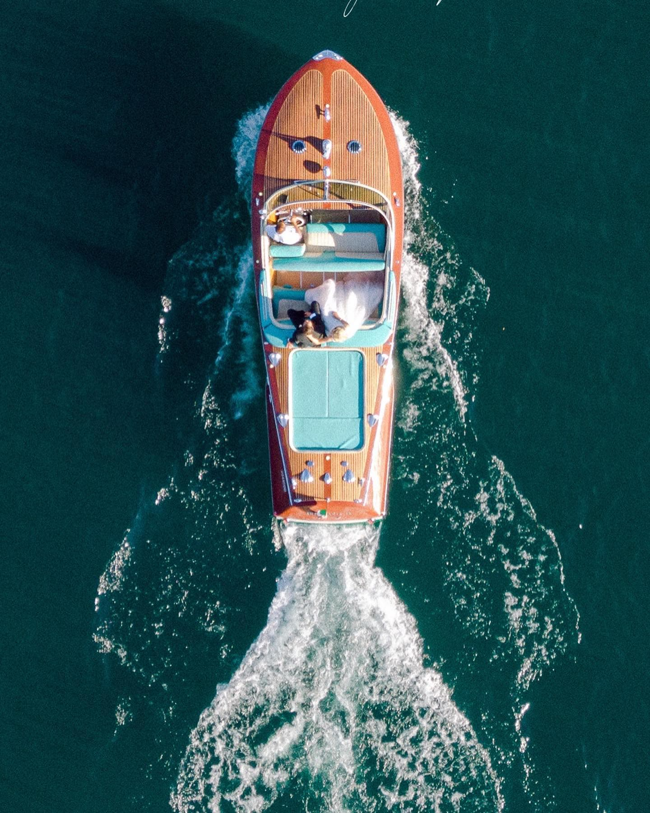
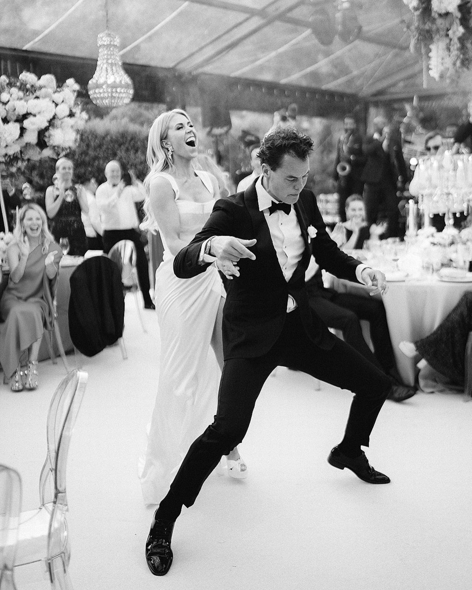
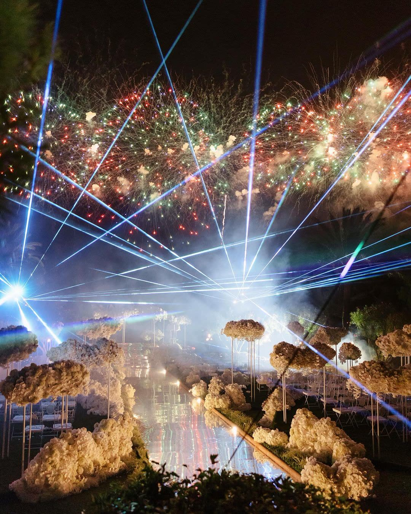
— The Film
— Lauren & Jonathan — Wedding Film Highlight
Where we film
Destination weddings are no longer a niche; for a certain couple they are simply how they marry. Zola's 2025 report put the average destination wedding at $41,312, against $34,208 at home. When a weekend is budgeted that deliberately, a luxury wedding videographer is never the afterthought.
- France. Provence and its lavender light. Paris at golden hour. St-Tropez and the French Riviera, where a wedding can move from a chapel to a superyacht before dinner.
- Monaco. Hôtel de Paris Monte-Carlo, the harbour, the light coming off the water as the evening cools.
- Italy. Lake Como - Villa del Balbianello for a ceremony on the terrace, Villa Balbiano for a full reception - the terraces of Ravello on the Amalfi Coast, and the cypress-lined estates of Tuscany.
- Morocco. Marrakech, from the gardens of Palais Ronsard in the Palmeraie to the courtyards of the medina's riads.
- Croatia. Dubrovnik's stone walls, Hvar's fields, the Adriatic at blue hour.
- Dominican Republic. La Romana and Punta Cana - sea, palms, and weather that arrives on schedule.
- The United States. Dallas and Las Vegas, covered by US-based teams so travel costs stay where they belong.
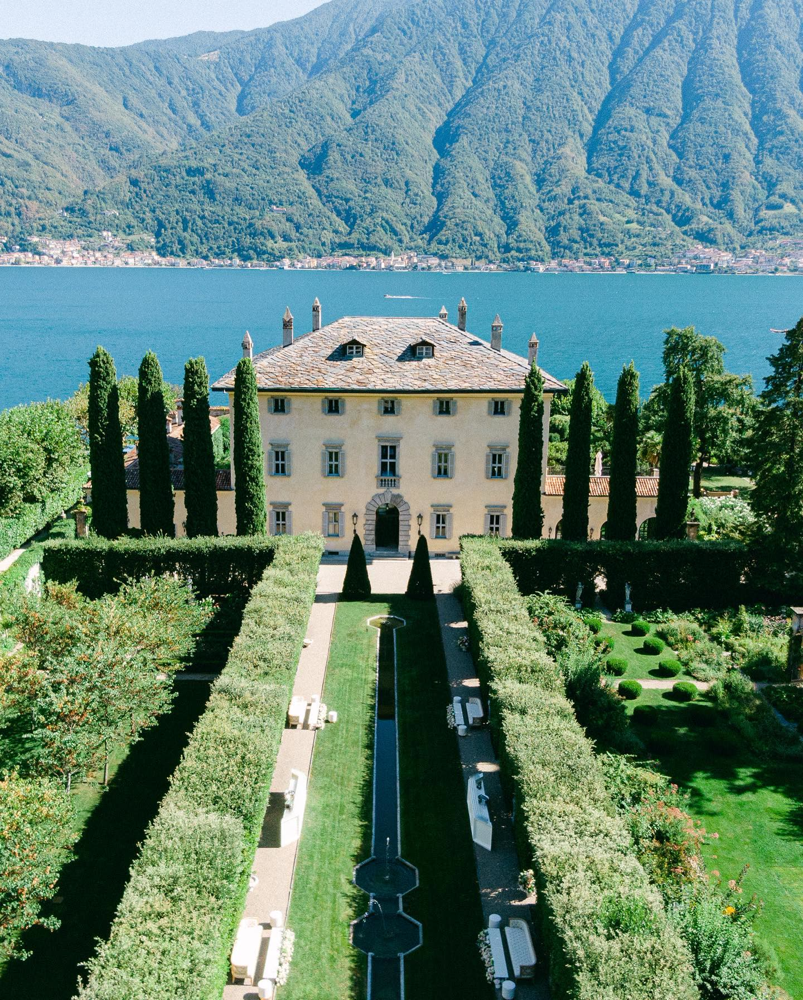
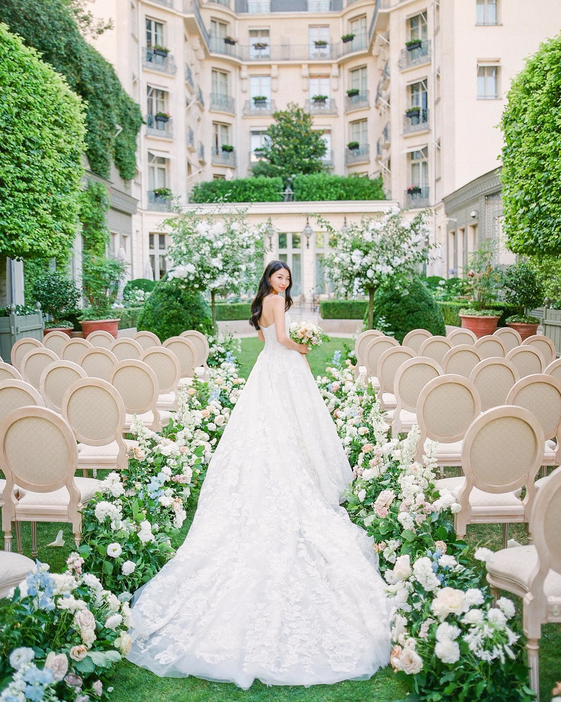
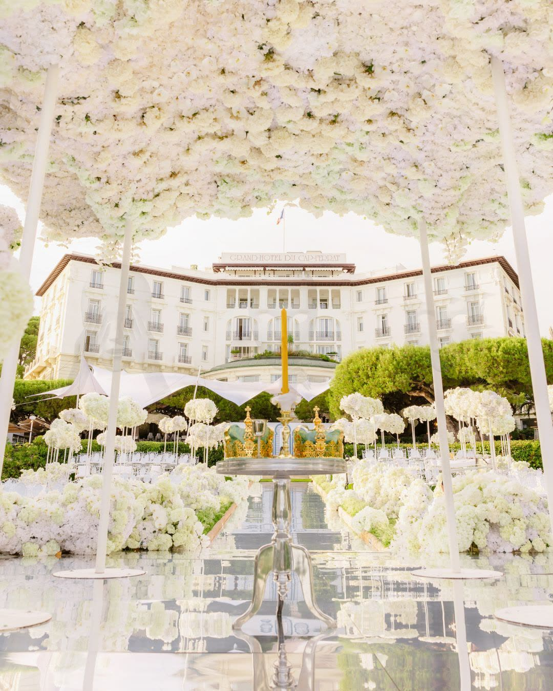
Filming a wedding you have never seen before
Destination wedding videography is nine-tenths preparation, and almost none of it shows in the finished film.
- Scouting. Villa del Balbianello's terrace is reached by boat, and the light crosses the lake at one particular hour. We walk a venue at the exact hour your ceremony will happen, and lock the shots then.
- Logistics. Kit that survives cobbles, tarmac and a tender. Backup bodies, cards copied twice before dinner, batteries charged for the voltage you are actually on. On multi-day weddings the schedule becomes a second production.
- Light. Marrakech at three in the afternoon is hard and white; Provence in June glows until nearly ten. We shoot for the light we will really have - which is why the film looks calm instead of colour-corrected.
- The rehearsal. Wherever a couple travels, one of us flies in ahead of the guests to see the venue, meet the planner, and shoot a test of the exact light at the exact hour.
- The people around you. We work with your planner rather than around them, and we handle the local paperwork early. Aerial coverage in Italy runs through ENAC's open-category rules and the D-Flight airspace maps; in the United States it runs through the FAA's operations-over-people framework. Permissions are decided months out... never mid-ceremony.
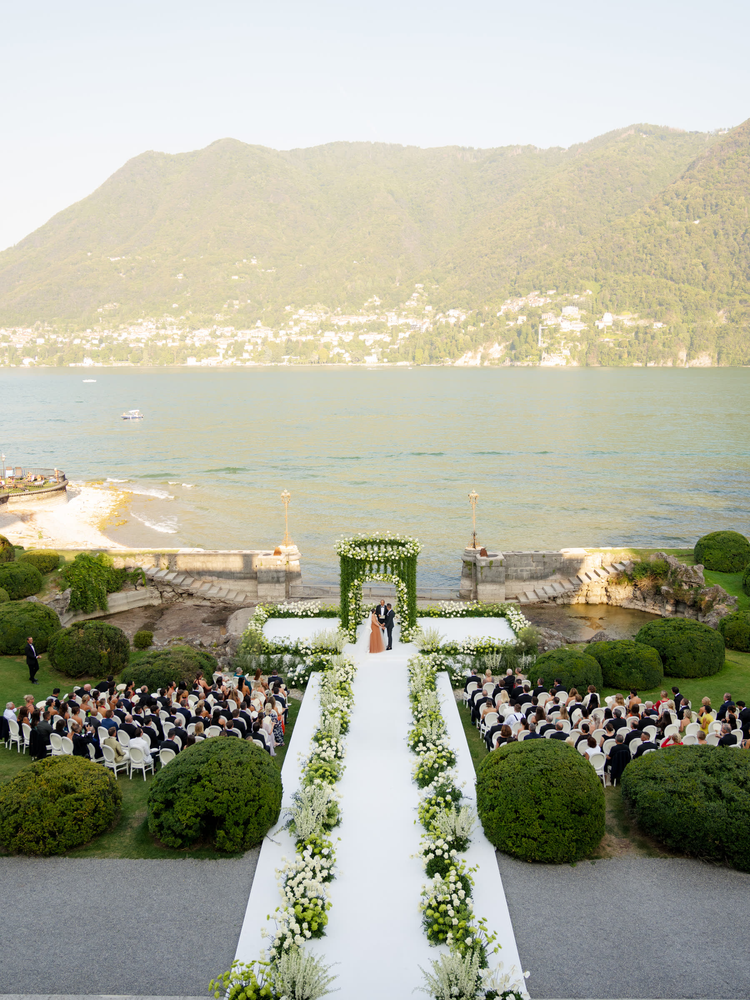
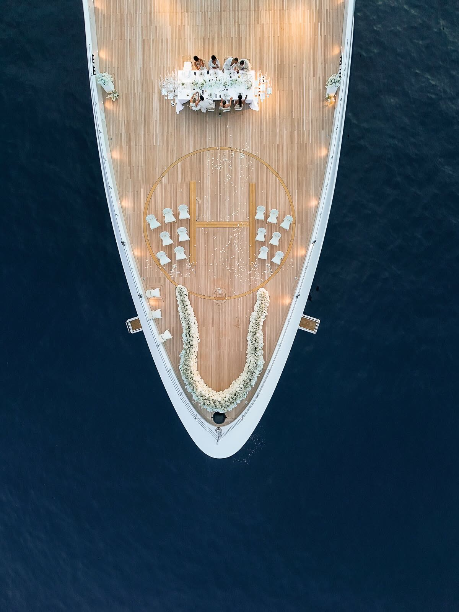
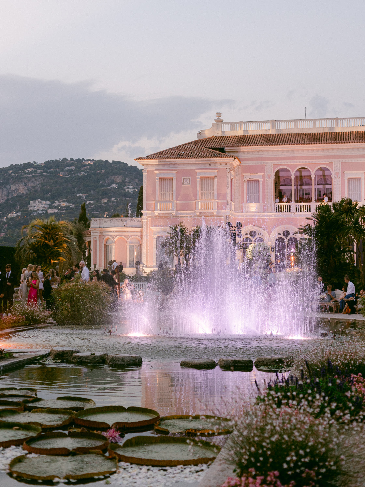
What a destination wedding film includes
- The Feature Film. The centrepiece: a feature-length destination wedding film, cut in movements, with the vows and speeches heard rather than summarised.
- The Highlight Cut. A tighter edit for family who missed the flight, and for the reception replay.
- The Teaser. Sixty to ninety seconds, delivered fast, built for a phone and for the group chat that will not stop.
- Frames. Aerial coverage of the venue and the landscape, wherever it is permitted and wherever it genuinely serves the story.
- Multi-Day Coverage. Welcome dinner, ceremony, day-after brunch - an entire wedding weekend held in one continuous arc.
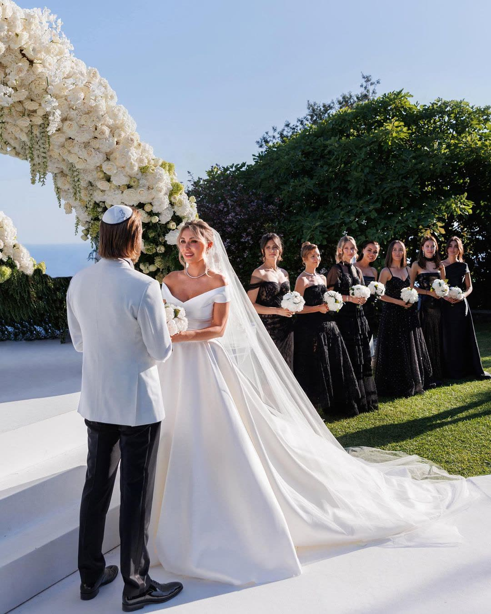
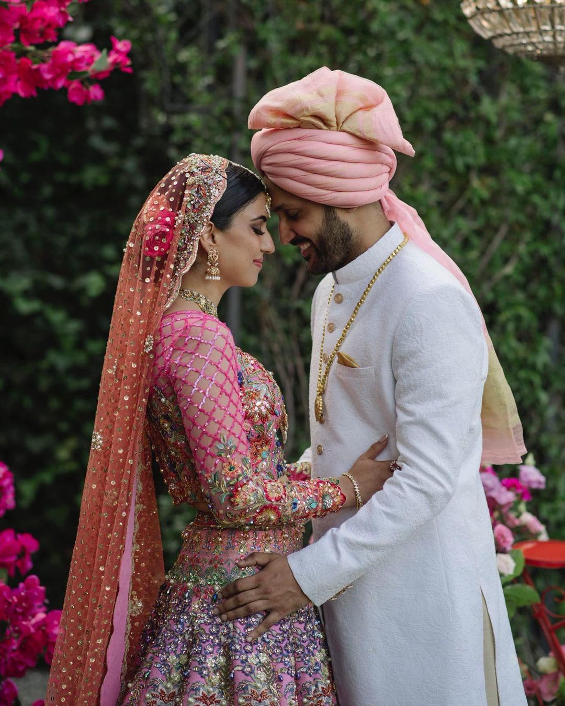
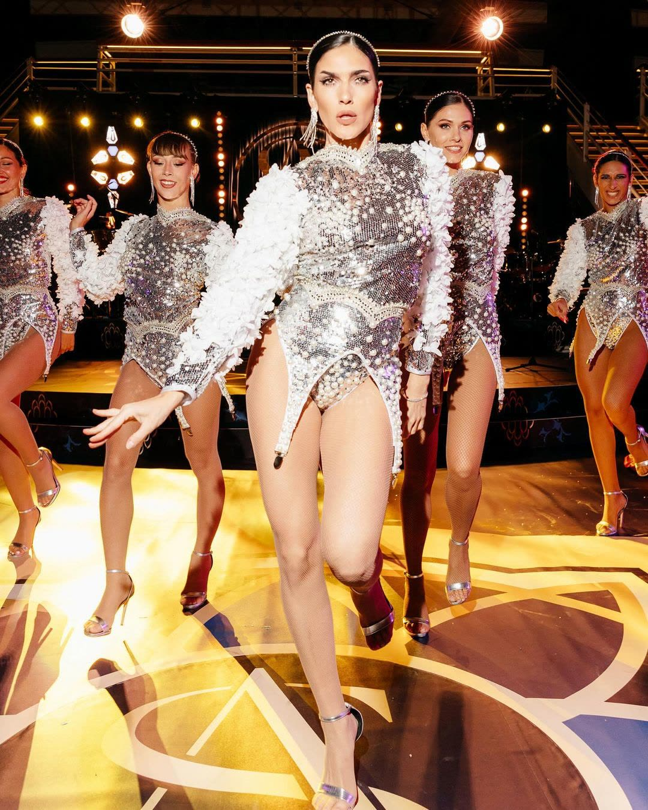
— The Films
— Joseph & Ally — Paris Wedding Teaser
— Selected Work

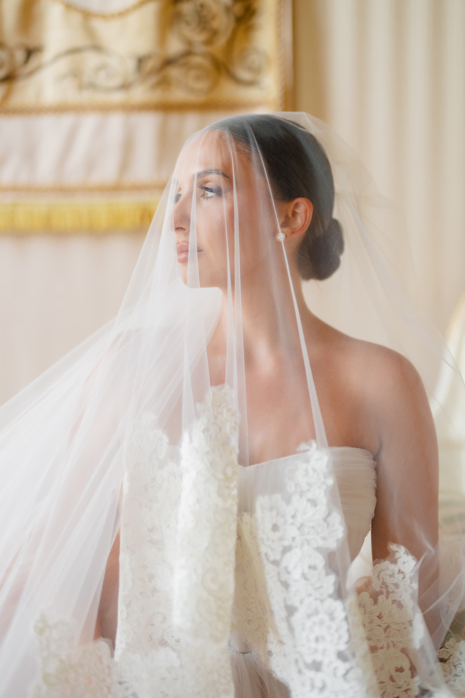


— Questions
Frequently asked
Do you travel?
Yes. Travel is not an add-on; it is the work. We quote flights, transfers, accommodation, and any permit or customs paperwork transparently, so the figure you approve is the figure you see.
How far in advance should we book?
Twelve to eighteen months is the sweet spot, and the film team belongs in that same early window as the venue - the best June and September dates in Italy and France go first. Most planners advise locking destination vendors about a year out (Destination I Do). If your date sits inside twelve months, still ask; couples move, and calendars open.
Do you work with our planner?
Always. Your planner owns the schedule; we own the light. We share a filming brief before the week begins, agree access and aerial windows, and keep the one thing that ruins a ceremony - a camera in the wrong place - off the table.
What about multi-day celebrations?
Most of our destination couples plan three days, often more. We cover the welcome dinner, the ceremony and the day-after brunch as a single story, because a weekend has a rhythm and a two-hour window cannot hold it.
Do you film in the United States?
Yes. US-based teams handle events in the United States, including Dallas and Las Vegas, so an American celebration is covered without transatlantic travel inflating the quote.
How long until we receive our film?
Films typically arrive four to eight weeks after the wedding, depending on the season's workload. Where a collection includes an Instagram reel cut, that usually comes together within a few days. It is always an estimate rather than a fixed date ... every wedding's schedule and workload are different, so we would rather be honest about the range than promise something we can't guarantee.
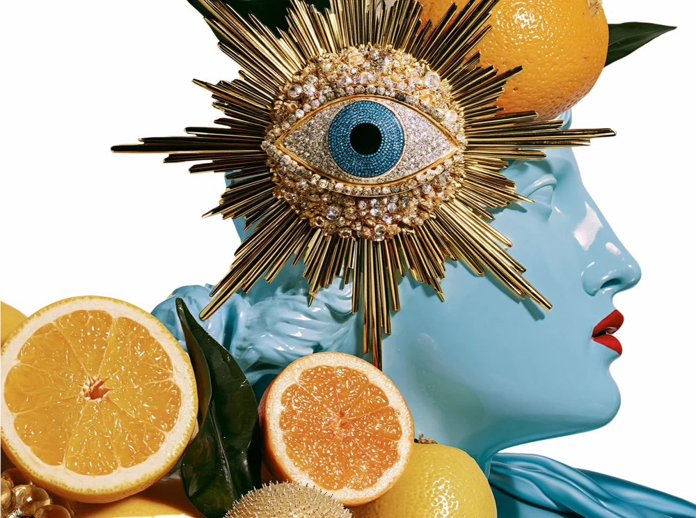
— Begin
Tell us about your day
The first step. Send the date, the destination and the shape of the weekend. We will reply with availability, a first read on how we would film it, and the questions we ask before a camera ever appears.
What happens next. A call, a plan, a scouting date... and then, months later, a destination wedding film your guests will still be talking about.
Check your date →